Oponentes


Tapu Bulu

Consejos para vencer
Al principio de cada barra de PS y tras cada movimiento compi Tapu Bulu pondrá Campo de Hierba.
Cuidado con sus aumentos de Ataque y sus poderosos movimientos físicos. En la barra de PS 3 usará Mazazo al principio y despuñes de usar el movimiento compi.
Es recomendable evitar sus movimientos. Aumentar tu Evasión o disminuir su Precisión son buenas opciones.
Sabotearlo mediante retroceso y confusión también puede valer. Pero, cada vez que se recupera, su resistencia a estas aumenta hasta volverse inmune.
Más información

Latias

Consejos para vencer
Cuanto más aumenten sus carácterísticas, menos daño recibirá.
A partir de la barra de PS 2, cada vez que esquive un movimiento, su Evasión aumentará. Sin embargo, cada golpe que reciba hará que su Evasión baje.
En la barra de PS 2, cuando sus PS bajan al 50%, aumenta su Evasión en 6 niveles.
Más información

Moltres

Consejos para vencer
Cualquier cambio en el clima, tanto por Moltres como por los Pokémon de tu equipo, es permanente. Moltres cambiará el clima a Soleado al principio de cada barra de PS y, además, en las barras de PS 2 y 3, lo hará cuando sus PS bajen de la mitad.
El sol beneficia mucho a Moltres: aumenta la potencia de sus movimientos, hace que todos sus movimientos acierten e impide reducciones de características y que sufra problemas de estado; y en las barras de PS 2 y 3 hará que Moltres se cure tras cada acción.
Junto a lo antes mencionado, Moltres tiene una ventaja añadida en cada barra de PS cuando el clima es soleado: en la barra de PS 1 reducirá la Defensa de los Pokémon, en la barra de PS 2 siempre causará quemaduras y en la barra de PS 3 reducirá Ataque, Defensa, Ataque Especial, Defensa Especial y Velocidad de los Pokémon.
Es recomendable hacerlo retroceder. Pero, cada vez que se recupera, su resistencia al retroceso aumenta.
Más informaciónCombates

VS. Tapu Bulu

Simplemente recupera PM en Defensa X Múltiple, usa todo el tiempo Hoja Afilada y procura que haya Campo de Hierba al usar el movimiento compi. El daño de su movimiento compi es bestial para ser una unidad de apoyo.
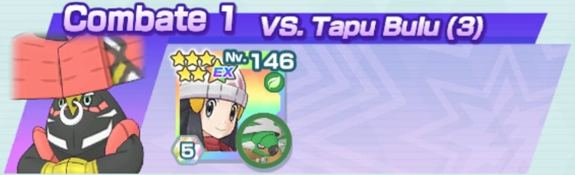

VS. Latias

Baja el contador al principio Impactrueno hasta 1, usa el movimiento de entrenador y después el movimiento compi para poner Campo Eléctrico (rol de Entorno). Con el movimiento sincro debilitas a los Pokémon de los lados en un par de golpes. El movimiento sincro y la casilla de Vista Aguda hacen todo el trabajo. Usa Gigatronada en la última barra.
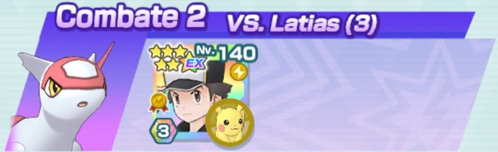

VS. Moltres


La casilla Acción Cielo Despejado +9 de Rayquaza elimina el clima cuando ataca. El primer movimiento compi debe ejecutarlo Rayquaza para megaevolucionar. Los demás lo hará Psyduck para ir curando al equipo. Intenta que Misty recupere PM con su movimiento de entrenador.
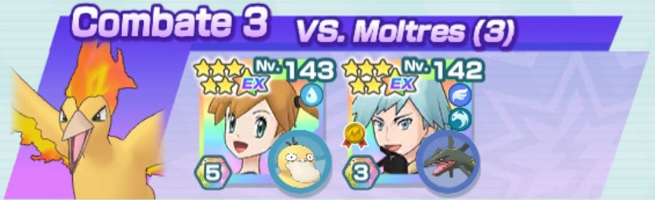
VS. Tapu Bulu

Lento pero posible. Ataca todo el tiempo con Látigo Cepa, aprovecha el Campo de Hierba para poder curarte sin recurrir tan pronto a las Minipociones Múltiples. Reserva Barrera Espinosa para protegerte de Mazazo en la barra de PS 3.
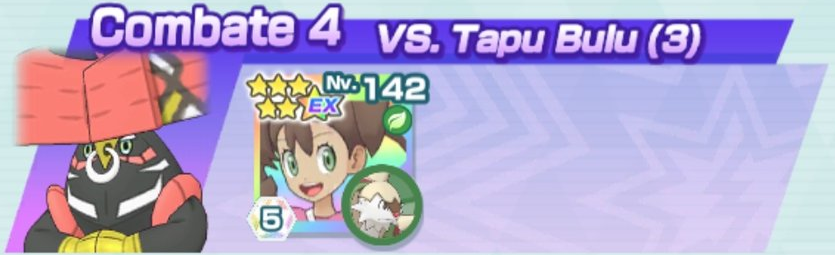
VS. Latias

La casilla del tablero y su habilidad fortuita bajan características a tutiplén. Sus movimientos golpean a todos y puedes quitarte a los Pokémon de los lados muy rápido. Pero cuidado al comienzo de la barra de PS 3... reza para que Avalancha haga retroceder porque como use Terremoto estás KO.
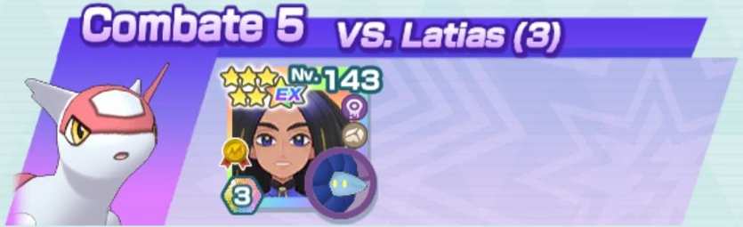
VS. Moltres


Reinicia si Palossand no recupera PM en Tormenta de Arena y el movimiento de entrenador. Intenta usar Defensa X cuando buenamente pueda. Los dos primeros movimientos compi que los haga Zarala. En las barras de PS 2 y 3 procura que Kukui use su movimiento compi cuando Moltres esté al 60% de PS aproximadamente.
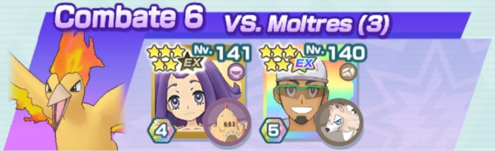
VS. Tapu Bulu

Apróvechate de su Campo de Hierba para bajar su Defensa a la vez que subes la tuya. Si te ves en apuros, usar Campo Psíquico para aumentar tu Defensa Especial. Campo Eléctrico para aumentar tu Velocidad es una buena opción. Usa el movimiento compi siempre que haya un campo activo.
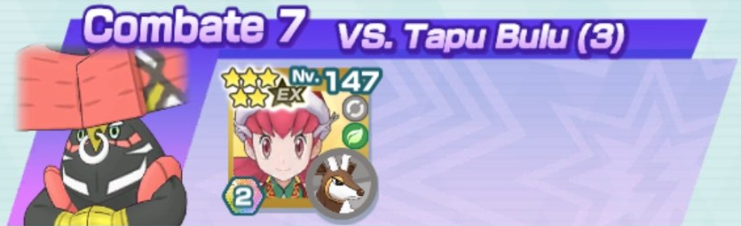
VS. Latias

Requiere mucha paciencia y RNG. Es necesario recuperar PM en el movimiento de entrenador. Reza para que la bajada de Precisión en Latias funcione. Derrota primero a Alakazam y luego a Flygon para que no importunen mucho.
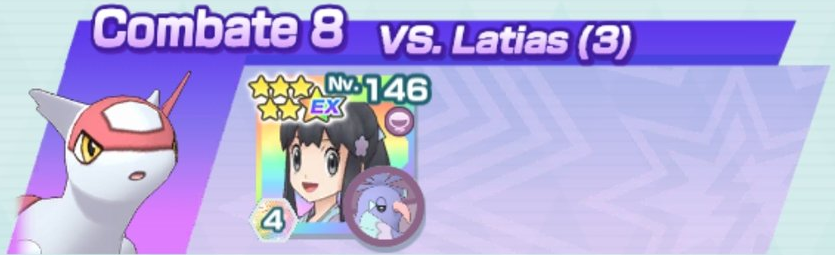
VS. Moltres


Usa Danza Lluvia en las barras de PS 1 y 3. Espera a usar Protección Oceánica cuando comience la barra de PS 2. Usa todo el rato el movimiento compi con Tapu Lele. Intenta que Moltres esté siempre bajo ataduras para que Suicune haga más daño y reza para que el movimiento sincro lo haga retroceder. La barra de PS 3 es crucial, pues puede tirarte todo el combate por la borda.
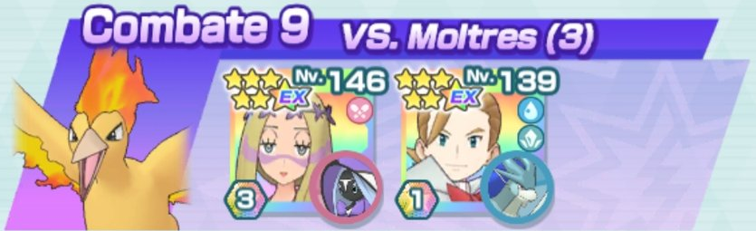
VS. Tapu Bulu

Lo más coñazo son los turnos previos al primer movimiento compi. Usa Nitrocarga hasta tener +6 de Velocidad, Directo+ para aumentar el crítico y luego el movimiento de entrenador. Si recupera PM, sigue el combate. De lo contrario, reinicia. Después es usar todo el tiempo Picotazo y atacar con el movimiento compi.
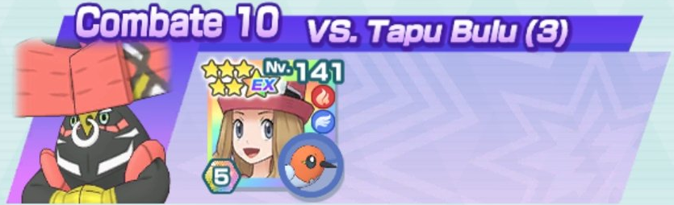
VS. Latias


Lo ideal sería que Eva recuperara al menos una vez PM su movimiento de entrenador. Al principio del combate Zygarde estará Z-posing y será Eevee el que ataque con Rapidez todo el tiempo. Usa el compi de Eevee primero con Alakazam y luego con Flygon. Con esto ganarás tiempo para bajarle características a Latias y así Zygarde pueda destrozarla.
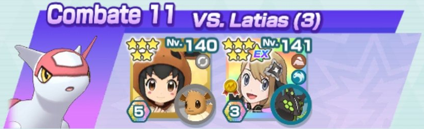
VS. Moltres


Usa el primer movimiento compi con Xatu para tener regeneración de PS, el siguiente sí lo usará Articuno. Moltres debe estar siempre confuso para que el movimiento compi de Xatu haga más daño y para que Articuno se vaya curando. Xatu debe usar todo el tiempo Tajo Aéreo para incordiar aún más con el retroceso. Es sencillo pero las bajadas de características de Moltres pueden jugársela a Articuno.
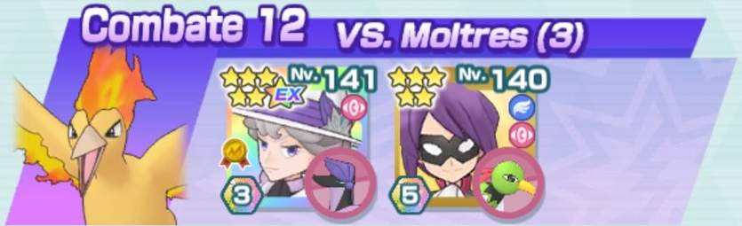
VS. Tapu Bulu


Un paseo por el campo. Que Yasmina recupere PM en Defensa X Múltiple y que use su movimiento de entrenador al empezar las barras de PS 2 y 3. Decidueye destrozará a Tapu Bulu a base de Triple Flecha.
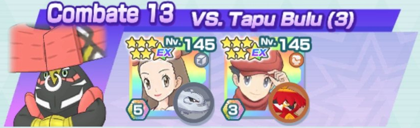
VS. Latias


Es preferible que el movimiento de entrenador de Oak suba la Defensa de Mew y que Leti recupere PM en Defensa Especial X Múltiple. Mew pondrá el pecho pero gracias a los aumentos de Evasión podrá esquivar algunos golpes. El movimiento compi lo usará siempre Leti para ir curando al equipo. Usa Rapidez y Confusión constantemente.
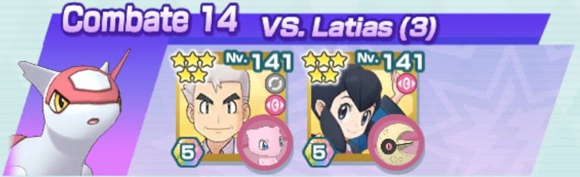
VS. Moltres


Empieza con Pisotón para hacer retroceder a Moltres y evitar que use Malicioso. De no hacerlo, sería preferible reiniciar el combate. Ambos se van curando con el sol y con la regeneración de PS. Leafeon hace mucho daño con el sol.
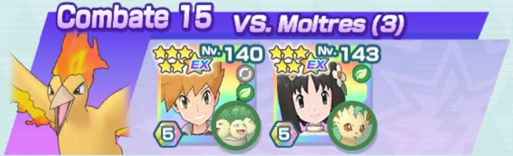
VS. Tapu Bulu


Procura que Paul recupere PM en su movimiento de entrenador para aumentar aún más su Defensa y que Toucannon pueda tener la probabilidad de crítico al máximo. Usa el movimiento de entrenador de Kahili antes del movimiento compi, uno en la barra de PS 2 y otro en la 3. Al comenzar la barra de PS 3 será mejor que Zamazenta tenga más del 60% de PS o se debilitará de un Mazazo.
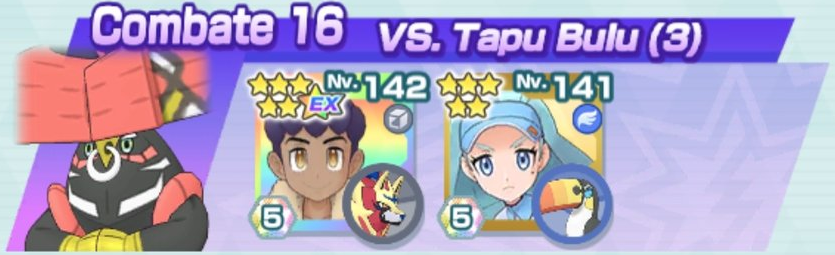
VS. Latias


Empieza usando el movimiento compi de Wormadam para ganar Evasión y después el de Venusaur para poner Campo de Hierba. Durante la barra de PS 2 aprovecha que Venusaur no falla sus ataques para bajar la Evasión de Latias. Si Wormadam necesita regeneración de PS o más Evasión puedes usar un movimiento compi más con ella.
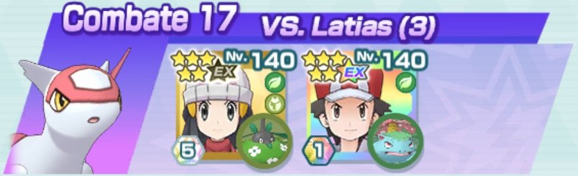
VS. Moltres


Brock solo pulsa un botón: Avalancha. Casi todo el combate usarás el movimiento compi de Eevee para aumentar las características y recuperar PS. Si tienes mucha suerte retrocediendo y recuperando Pociones, el combate es fácil. De lo contrario, el combate puede hacerse bola.
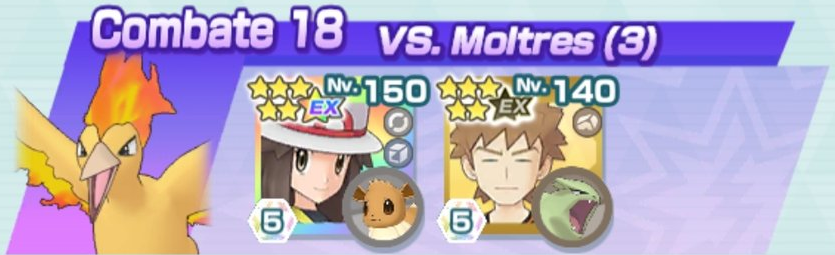
VS. Tapu Bulu


Con Israel no necesitarás usar el movimiento de entrenador de Lysson y así ver reducidas las defensas de Yveltal. Ala Mortífera consume muchas barras y puede solventarse con la casilla de Paralizador de Roserade y aún así se hace algo lento. Intenta que Roserade llegue al menos a la barra de PS 3. Yveltal podrá rematarlo solo porque se cura una barbaridad.
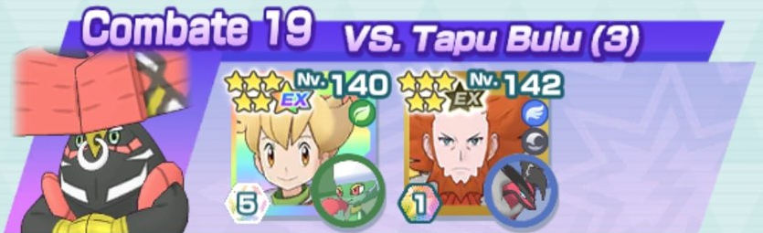
VS. Latias


Procura que Jugador recupere PM una vez en su movimiento de entrenador. Un movimiento compi de Xerneas para bufar y lo demás va rodado. Alcremie baja stats y Xerneas se va curando solo. Acaba primero con Alakazam, luego con Flygon y, por último, con Latias.
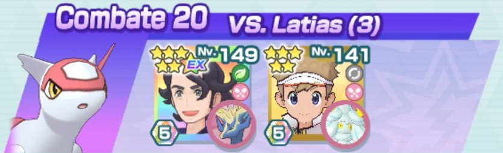
VS. Moltres


Swampert debe recuperar 1 PM de Danza Lluvia. Intenta que Gastrodon aguante todo lo posible con el sustain de la regeneración de PS y la Lluvia Curativa. Usa Danza Lluvia cuando comiencen las barras de PS 2 y 3 y, además, usa el movimiento compi de Swampert antes de que los PS de Moltres lleguen al 50%.
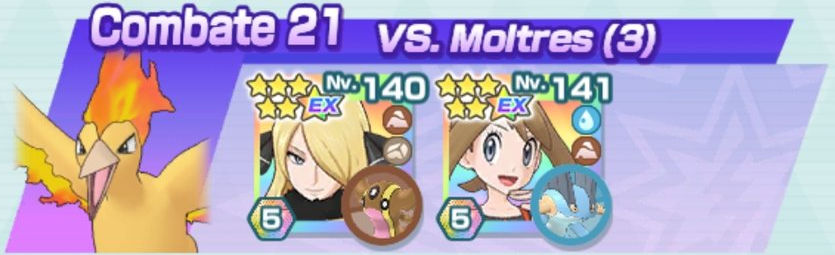
VS. Tapu Bulu


Intenta que Tapu Bulu no use muchos movimientos compis porque Bulbasaur es frágil. Por suerte se puede ir recuperando con Campo de Hierba. En la barra de PS 2, Bulbasaur se ventila a Tapu Bulu con Bomba Lodo. Serperior se cura mucho gracias a Gigadrenado, así que intenta que tenga el máximo de PS posible al comenzar la barra de PS 3.
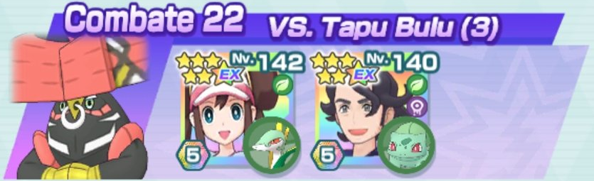
VS. Latias


Spamear Brillo Mágico con Hatterene y Beso Drenaje con Azumarill para bajar cracterísticas. Derrota primero a Alakazam, luego Flygon y por último Latias. Guarda el movimiento dinamax para finalizar la barra de PS 2 (si puedes usar un movimiento compi al empezar la 3) o para acabar el combate.
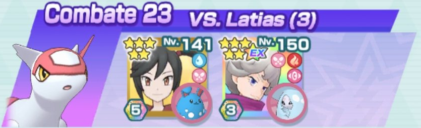
VS. Moltres


Guarda el movimiento de entrenador de Sémola hasta la barra de PS 2 y protegerte de las quemaduras. Moltres de Galar hace bastante daño y hace retroceder casi siempre, así que se come al otro Moltres.
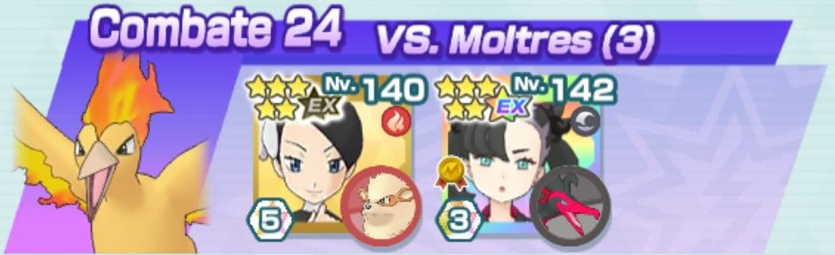
VS. Tapu Bulu


Cuantos más PM recupere el movimiento de entrenador de Sachiko mejor. Lo ideal sería usar al menos una vez el movimiento compi de Lionel para aumentar más la determinación (rol de Apoyo). Intenta hacerlo cuando Sachiko no esté en apuros, pues el resto del combate ella lo usará para irse curando. Guarda Maxiciclón para la barra de PS 3.
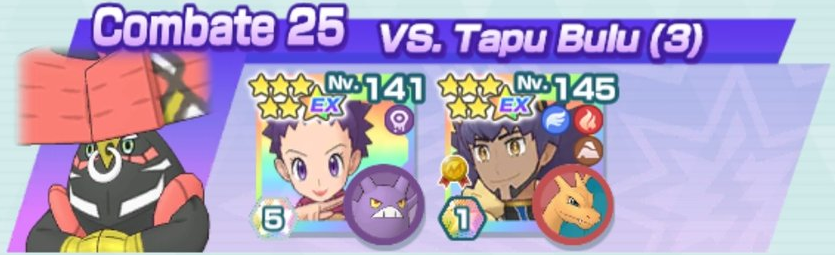
VS. Latias


Primero intenta usar todos los movimientos de entrenador de Kiawe que puedas. Al menos que recupere PM una vez. A continuación, usar los movimientos de entrenador de Ariana. Comienza pegando con Hueso Sombrío a Latias hasta usar el primer movimiento compi de Altaria contra Flygon. Repite hasta usar el movimiento compi de Marowak contra Alakazam. Altaria hace más daño cuantos menos PS tenga así que no la cures tan a la ligera, pero tampoco la dejes debilitarse.
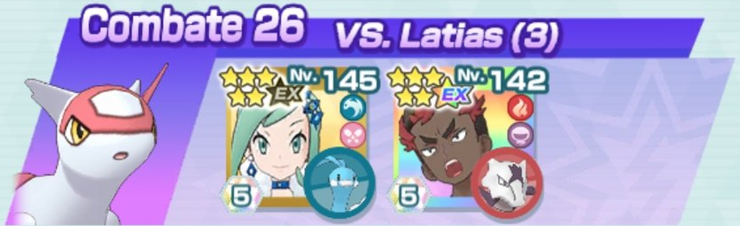
VS. Moltres


Mantén el relevo imposible todo lo que puedas. Recupera PM al menos 1 vez con Cathy. Recomendable no usar el movimiento compi de Suicune hasta gastar necesariamente la Minipoción múltiple. Vigila que los movmientos de Drednaw no bajen los PS de Moltres por debajo del 50% en las barras 2 y 3 para que Moltres no quite la lluvia, así Drednaw lo derrotará con su movimiento compi.
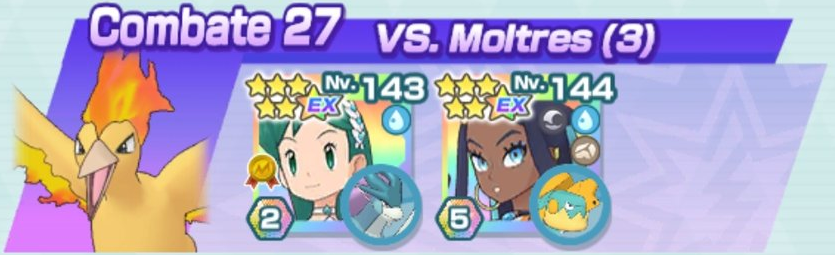
VS. Tapu Bulu


Zarala debe recuperar al menos 1 PM de sus movimiento de entrenador. Procura que Decidueye mantenga a Tapu Bulu en relevo imposible. Usa Golpe Fantasma de Banette solo para esquivar movimientos peligrosos como Bomba Germen al principio de la barra de PS 2 o Mazazo de la barra de PS 3. Decidueye hace mucho daño así que usa el movimiento compi de Banette para que se cure y aguante más.
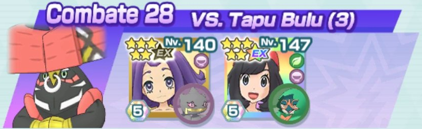